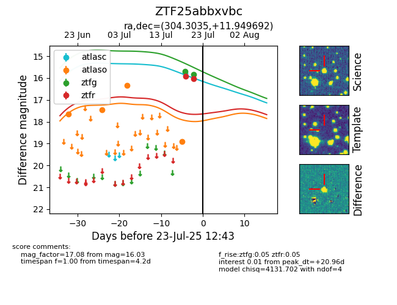

Target ZTF25abbxvbc at 2025-07-23 12:43, see:
FINK: fink-portal.org/ZTF25abbxvbc
Lasair: lasair-ztf.lsst.ac.uk/objects/ZTF25abbxvbc
ALeRCE: alerce.online/object/ZTF25abbxvbc
alt names
ZTF25abbxvbc (ztf,fink)
coordinates:
equatorial (ra, dec) = (304.3035,+11.94969)
galactic (l, b) = (53.8121,-12.93874)
photometry
last atlasc=15.77, atlaso=18.89, ztfg=15.85, ztfr=16.03
1 atlasc, 4 atlaso, 2 ztfg, 2 ztfr detections
